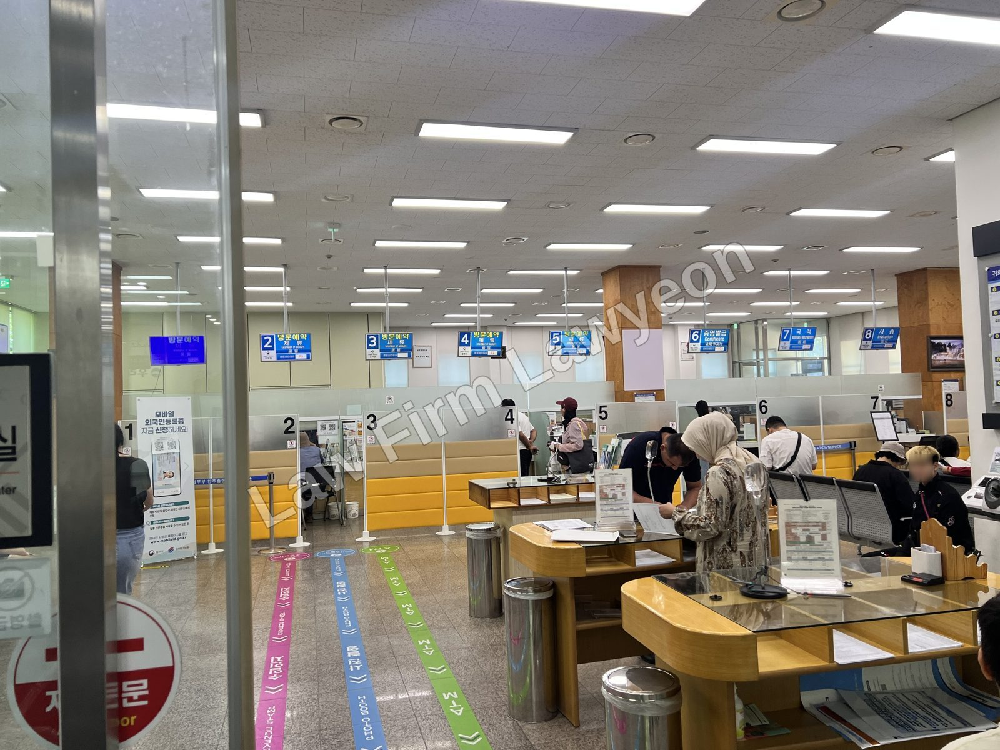
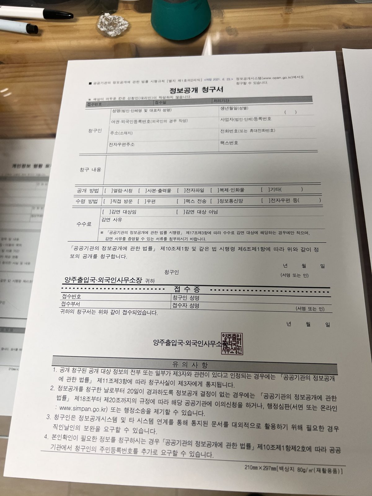

"Does divorce mean I lose my F-6 visa and have to leave Korea?" Not necessarily. Once the marriage that supports the spouse-of-a-national status (F-6-1) ends, that status can no longer be maintained as such. But if you are raising a minor child, you can continue under child-rearing (F-6-2); if the marriage broke down through no fault of your own, you can continue under marriage dissolution (F-6-3). What matters is not the divorce itself, but how well you can show who was responsible for the breakdown and why you need to remain in Korea.
Does divorce mean I lose my F-6 visa and have to leave?
You will often read that "divorce means immediate departure." That is not accurate.
F-6 status assumes a marriage, so divorce removes the basis for the spouse-of-a-national status (F-6-1). However, separate statuses exist that let a divorced foreign national continue to stay in certain situations: raising a minor child (child-rearing), a breakdown that was not your fault (marriage dissolution), and — where neither applies but you must remain to settle property or family affairs — family affairs (F-1-6).
So if a divorce is ahead of you, first identify which route fits your situation, and prepare the supporting materials alongside the divorce process itself.

How is the F-6 visa divided?
F-6 status has three sub-categories.
| Sub-status | Who it covers | After divorce |
|---|---|---|
| F-6-1 Spouse of a national | A person in a valid marriage intending to continue married life with a Korean national | Basis ends when the marriage ends |
| F-6-2 Child-rearing | A father or mother raising, or intending to raise, in Korea a minor child born from the marriage (including a de facto marriage) with a national | Change/extension where child-rearing is recognized |
| F-6-3 Marriage dissolution | A person unable to maintain a normal marriage due to the spouse's death or disappearance, or other reasons not attributable to them | Change/extension where a no-fault ground is shown |
Marriage dissolution (F-6-3) is not issued as a visa at an overseas mission; it is granted only as a change of status inside Korea.
One important point: a change to child-rearing (F-6-2) or marriage dissolution (F-6-3) is, as a rule, a procedure for people currently staying on a status other than marriage immigration (F-6). If at the time of application you already hold spouse-of-a-national status (F-6-1), the matter is generally handled not as a new "change" of status but as an extension of stay on the ground of child-rearing or marriage dissolution.
Why does fault for the divorce matter?
As a rule, spouse-of-a-national status (F-6-1) assumes an ongoing marriage, so its basis disappears upon divorce.
Exceptions are recognized where you are raising a minor child (F-6-2), or where the breakdown was not your fault (F-6-3). In other words, what the review examines is not "did a divorce occur," but "whose fault ended the marriage" and "is there a need to keep living in Korea."
For this reason, documenting how the marriage ended and where fault lies with objective evidence is critical; if that record is weak, your stay may not be recognized.
If you are raising a child — Child-rearing (F-6-2)
If you are raising, or intend to raise, in Korea a minor child born from your marriage (including a de facto marriage) with a national, you can stay under child-rearing (F-6-2).
Immigration will confirm that you are in fact raising the child, and may conduct a field investigation where needed. Even if you are not the primary caregiver, if you hold visitation rights and actually maintain ongoing contact with the child, you can document this and be granted stay. However, if a family court decision has limited or removed your visitation rights, or if there is no contact with the child, the stay will not be approved.
Child-rearing is judged on the child's need for care, separately from who was at fault. So if you have a minor child, it is appropriate to consider child-rearing (F-6-2) before marriage dissolution (F-6-3).
For those already staying under child-rearing (F-6-2), extensions of stay are granted within a three-year range.
If your spouse was at fault — Marriage dissolution (F-6-3)
Even where you have no child and child-rearing does not apply, you can continue under marriage dissolution (F-6-3) if the spouse died or disappeared, or if you could no longer maintain a normal marriage for reasons not attributable to you — such as the Korean spouse leaving home or committing violence.
Separately, even where you bear responsibility for the breakdown, if you are supporting the Korean spouse's parents or family, you can document that relationship and support and be granted stay under marriage dissolution (F-6-3) within a one-year range.
After the first grant of stay on this ground, you continue under marriage dissolution (F-6-3) status and receive extensions of stay. Note that certain groups may be excluded — for example short-term residents, those with a criminal record (a person who received only a simple fine is not excluded), and those who received an extension of stay for the purpose of departure.
How do you prove fault?
The central issue under marriage dissolution (F-6-3) is showing, with objective evidence, that the breakdown was not your fault. A bare statement or mere circumstances are not enough.
| What to show | Documents |
|---|---|
| The divorce and its cause | Detailed marriage certificate noting the divorce; divorce judgment, mediation record, or reconciliation-recommendation decision (judicial divorce); a statement of reasons for a consensual divorce |
| Spouse's death | Death certificate; basic certificate showing the spouse's death |
| Spouse's disappearance | Adjudication of disappearance and other proof of the disappearance |
| Spouse leaving home / violence | Report of the spouse leaving home; medical certificate for assault; prosecutor's decision not to indict |
| Third-party confirmation | Confirmation from a recognized women's organization; confirmation from a relative of the national spouse within the fourth degree; confirmation from the neighborhood head at the time the marriage broke down |
| Need to remain in Korea | Materials on child-rearing/visitation, property division, and an established life in Korea |

Because a consensual divorce often leaves no record of fault, gather fault-related evidence before you begin the divorce process. Circumstances like violence or a spouse leaving home become harder to document as time passes.
No child and fault is unclear — Family affairs (F-1-6)
Sometimes there is no minor child, so child-rearing does not apply, and the spouse's fault is hard to prove, so marriage dissolution (F-6-3) does not apply either. Even then, if you must remain in Korea to settle property or family affairs, you can stay under family affairs (F-1-6).
This status is reviewed on whether a normal marriage was maintained before the breakdown and whether staying in Korea is unavoidable. Stay is granted in six-month blocks, up to one year from the date of the change of status. If, however, litigation over a debt, a claim, or the return of a lease deposit continues past that one year, you may stay under status of other (G-1) until the litigation ends.
In short: if there is a minor child, consider child-rearing (F-6-2); if the spouse's fault can be shown, marriage dissolution (F-6-3); and if neither applies but property or family affairs must be settled, family affairs (F-1-6).
What if you are separated or in a divorce suit?
Being separated does not by itself cancel your F-6 status right away. "Separation" here means keeping the formal marriage while the couple lives apart for a long period; if you cannot show an intent to maintain the marriage and the reasons for separation, this can count against you at the extension review.
If you are separated from your spouse, in the middle of a divorce suit (including preparing one), or your spouse has disappeared but has not yet been formally declared missing, the marriage is still legally intact, so you can obtain an extension of stay under spouse-of-a-national status (F-6-1). Once the divorce is finalized by judgment, the usual next step is to change to child-rearing (F-6-2) or marriage dissolution (F-6-3).
For this reason, plan your next residence status from the moment the divorce is contested.
FAQ
This article is general legal information, not advice on an individual case. Residence reviews apply differently depending on the facts and timing, so confirm the right course for your situation through a consultation.